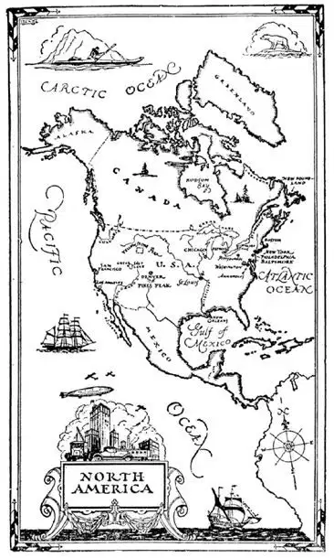
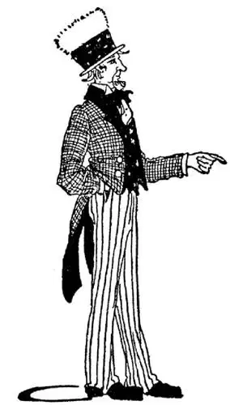

05
The 13 Club
十三俱乐部

A MAN may pay millions of dollars to have a hospital, a library, or a museum named after him, and another who has paid nothing, done nothing, deserved nothing, and asked nothing has two of the biggest things in the World—the two continents North and South America—named after him, and people will go on forever calling them America after him—an unimportant, almost unknown man named Amerigo.
Do you know the song that begins, “My Country, ’Tis of Thee”? What do you mean by “My Country”? It is a part, the smaller part, of North America.
Have you a buffalo nickel in your pocket—a 5-cent piece ? If not, perhaps you can borrow one just to look at. On the head side is the picture of an Indian with feathers in his hair. Why do you suppose our country has the picture of an Indian instead of a white man on the nickel? On the tail side is the picture of a buffalo. Why do you suppose our country has a picture of a buffalo on the nickel instead of a horse or a cow?
Well, long before there were any white men here at all, or any horses or cows, there were a great many Indians and a great many buffaloes in this country. Now there are very few Indians and very few buffaloes in America, so these pictures on the nickel are to remind us that the Indian is the first American man and the buffalo is the first American animal.
If you will look at the printing on the nickel you will see it says “United States of America.” That’s the full name of our country, but it is too long for us to say United States of America every time, so we usually say just United States or just America or use just the initials U. S. A.
Have you ever seen a picture of a tall man with a suit of clothes that looked as if it had been made out of a flag, with red and white striped breeches, a long-tailed coat, and a tall hat with stars on it? There never was such a man really, but he is supposed to be the picture of the United States. As the initials of the United States are U. S., some one said they stand for Uncle Sam, so the old fellow dressed in a flag we call Uncle Sam.

The map of the U. S. looks as if it were made like a patch-work quilt of patches of different sizes and shapes. These patches are the States that are United—that means, joined to one another. As a matter of fact, of course, there are no lines between the States. The lines on the map are marked on the ground by stone posts set so far apart that you may cross from one State to another without even knowing when you are in a different State. Each State has towns and cities and country. I live in a city and the city is in the State of Maryland. You may live in a city or a town or in the country in another State. But every one in the U.S. must live in some State unless—I’ll tell you later the few places he may live without being in any State.
Some of the States have straight sides and some have one, two or more crooked sides. Some are big and some are little. The biggest State is Texas, at the bottom, near the center—only we don’t say bottom, we say south. The smallest State is Rhode Island, which is not an island at all. It is near the upper right-hand corner—only we don’t say upper right-hand corner, we say northeast. Texas would make more than 200 Rhode Islands. That is, you could put more than 200 Rhode Islands in Texas.

So the old fellow dressed in a flag we call Uncle Sam
我们因此就把那个穿着国旗的老伙计叫做山姆大叔
Not so long ago there was no United States. There were only thirteen little States along the shore of the Atlantic Ocean. These States were so small they thought they ought to form a club. There is an old story about a man who wanted to break a bundle of sticks. He tried and he tried but he couldn’t break the bundle. Then some one told him to take the bundle apart and break each stick separately; so he did, and broke them easily. The States thought that they, in the same way, might be broken easily if separate, so they tied themselves together like a bundle of sticks in order that they might not be “broken” by an enemy. And so the 13 States formed a 13 club and called themselves the United States. They took as their motto “In Union is Strength,” which means “In one bundle we are strong.”
Now thirteen is generally considered an unlucky number, but these 13 States were not afraid of bad luck. In fact, as the new country had to have a flag, they made a flag with 13 stripes— seven red stripes and six white—and they put a white star for each State in a blue corner of the flag. Other parts of North America thought they’d like to join the club too, and more and more pieces kept on joining until there were forty-eight States, and these States that were united stretched from the Atlantic Ocean on one side to the Pacific Ocean on the other—that is, from where the sun rises from the ocean on one side to where it sets over the ocean on the other. Each time a piece joined the U. S., another star was put in the corner of the flag, but the number of stripes was not changed, for there would have been too many; so now there are forty-eight stars—that means forty-eight States united into one country. That’s why there are on our coins the words “e pluribus unum ,” which means “one from many.”
Not all of America joined the club, however. The country north of the U. S. called Canada and the country south of the U. S. called Mexico did not join. And yet the people in Canada are Americans, and the people in Mexico are Americans, too, but both Canada and Mexico have different rulers from what we have, for they are different countries.
Though there are very few Indians left in the U. S., we still use some of their names in naming our States. See if you can pick out some of the States on the map that have Indian names. Maryland and Virginia, of course, are not —for they are girls’ names. States beginning with “New”—like New York, New Jersey, New Hampshire—of course are not Indian. They are named after old places in another country. But Minnesota, which means “sky blue water”; Ohio, which means “beautiful river” or “great”; and many others are Indian.
【中文阅读】
一个人也许要花上几百万美元才能让一家医院、一个图书馆或者一个博物馆以他的名字命名，但是有个人却没花一分钱，没做任何事，没有任何功劳，也没提出任何要求，却让世界上两个最大的东西——北美和南美两块大陆——以他的名字命名，叫亚美利加，而且人们会永远这样叫下去，这个微不足道的人，名叫亚美利哥。
你知道那首歌吗？开头唱道：“我的祖国，这属于你。”你知道“我的祖国”指的是什么吗？它是北美洲的一部分，较小的那一部分。
你口袋里有一枚水牛硬币吗？就是5分的硬币。没有的话你可以借一枚来看看。硬币的正面是一个头发上插着羽毛的印第安人的画像。你能猜出为什么我们国家硬币上的画像是印第安人，而不是白人吗？硬币的反面是一个水牛的画像。你想想为什么不是一匹马或者一头奶牛呢？
原来，很久以前，这里根本没有白人、马或奶牛，而是有很多很多的印第安人和许多许多的水牛。现在在美国，印第安人和水牛已经非常少了，因此硬币上的这些图像是提醒我们印第安人是最早的美国人，水牛是最早的美国动物。
如果看一下硬币上的字，你会发现上面写着：美利坚合众国。这是美国的全称，但是每次都说美利坚合众国就太长了，所以我们通常就说美国，或简称为U.S.A.。
你有没有看过这样一个人的图片？他个子高高的，穿着一套好像是用美国国旗做的衣服，红白条纹的马裤，长长的燕尾服，戴着一顶满是星星的高帽子。实际上从来没有这样一个人，但是他被认为是美国的化身。美国的首字母是U.S，于是有人说它代表山姆大叔（Uncle Sam，首字母同U.S.），我们因此就把那个穿着国旗的老伙计叫做山姆大叔。
美国地图看起来就像由不同尺寸和形状的布块拼缝而成的被子。这些布块就是美国的州，这些州联合在一起——也就是说彼此联为一体。当然，实际上这些州之间并没有线。地图上的这些线在地面上就只是用界石远远地做的标记，所以你可能从一个州跨进了另一个州自己却不知道。每个州都有城镇、城市和乡村。我住在位于马里兰州的一座城市里。你也许住在另一个州的某座城市或者镇或者乡村里。但是每个美国人都得住在某个州里，除非他是住在不属于任何一个州的地方——稍后我会告诉你有哪几个地方。
有些州有着笔直的边界，有些州的边界至少有一两处是弯曲的。有的州大，有的州小。最大的州是德克萨斯州，靠近中心下边的地方——不过我们不说下边，而说南边。最小的州是罗德岛州，实际上它根本不是什么岛。它靠近右上角——不过我们不说右上角，而说东北部。德克萨斯州有两百多个罗德岛州那么大，也就是说，你可以把两百多个罗德岛州放进德克萨斯州里。
不久以前美国还不存在。只有沿大西洋海岸的13个小州。这些州都很小，所以他们觉得应该成立一个俱乐部。这与一个古老的故事有关，故事说有个男人想折断一束树枝，他怎么折都折不断。于是有人给他出主意把树枝解开，再一根一根折；他就照做了，果然很容易就把树枝折断了。这13个州认为如果他们彼此分开，同样也会很容易被打垮，于是他们团结起来就像一捆树枝那样，不会被任何敌人“折断”了。所以这13个州就组成了一个“十三俱乐部”，起名叫“合众国”。他们的座右铭是：“团结就是力量。”意思就是“抱成团，折不断”。
现在13通常被认为是个不吉利的数字，但是这13个州并不害怕什么坏运气。甚至想到一个新的国家总得有国旗，他们还制作了一面有13道条纹的旗子——七红六白——并在旗子蓝色一角用13颗白色的星星代表13个州。北美的其他地区也想要加入进来，于是越来越多的地方加入进来，直到一共有48个州，这些州连起来从大西洋东侧的岸向西延伸到西侧的太平洋——也就是从海洋一边太阳升起的地方到海洋另一边太阳落下的地方。每次有新州加入，旗子一角的星星就会添加一颗，但是条纹不再增加，不然就太多了；所以现在国旗 上有48颗星——意味着48个州联合成一个国家。这就是为什么我们的硬币上有“e pluribus unum”这样的拉丁语字样，意思是“合众为一”。
然而并不是整个美洲所有地区都加入了这个俱乐部。美国北部的国家加拿大和南部的国家墨西哥都没有加入。不过加拿大人也是美洲人，墨西哥人也是美洲人，但加拿大和墨西哥都有着和我们不一样的统治者，因为他们是不同的国家。
尽管美国现在只有极少数印第安人，我们仍然用他们的名字来命名一些州。看看你能不能在地图上找出几个有印第安名的州。马里兰和弗吉尼亚当然不是——因为它们是女孩的名字。以“新”字开头的州——比如说纽约 [1] 、新泽西、新罕布什尔——当然也不是。它们是按别的国家的老地名来取名的。但是像明尼苏达（意思是“天蓝色的水”），俄亥俄（意思是“美丽的河”或“伟大的”）等许多其他州——都是印第安语。